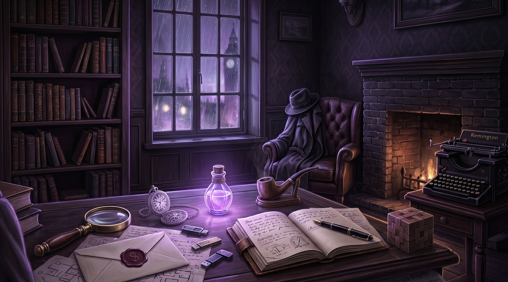

🕵️ Sherlock Kimdir?
Gerçekleri herkes görür… ama anlayabilen çok azdır.
Sherlock Holmes, sıradan insanların gözünden kaçan detayları yakalar, parçaları birleştirir ve gerçeği ortaya çıkarır.
Bu vakada onun zekâsı var… ama gözleri sensin.

📜 Operasyon Rehberi
- 🔍 Gözlemle: Odadaki gizli kanıtları farenle arayıp bul.
- 🎒 Topla: Kanıtlara tıklayarak 10 ipucunun tamamını envanterine aktar.
- 📜 İncele: Vaka dosyasına (📜) göz atarak bağlantıları çöz.
- 🧠 Birleştir: Tüm kanıtları topladıktan sonra, mantıklı iki ipucunu seçip sağdan birleştir.
- 💡 İpucu: Kanıtları bulmakta zorlanırsan 'Space' (Boşluk) tuşuna bas.